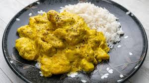

Ingredienti
- 300g di petto di pollo
- 1 cipolla
- 1 cucchiaio di pasta di curry
- 200ml di latte di cocco
- Olio, sale, pepe
- Riso basmati per accompagnare
Preparazione
- Taglia il pollo a cubetti e rosolalo in padella con cipolla.
- Aggiungi la pasta di curry e mescola bene.
- Versa il latte di cocco e lascia cuocere 15-20 minuti.
- Servi con riso basmati caldo.
Tempo di preparazione: 20-30 minuti
Difficoltà: Media